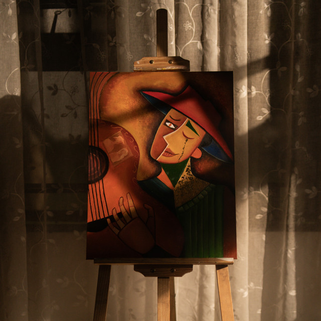

Tothapi
From mia the great
Click the envelope.
I think tulog pa ikaw ngayon WHAHAHAHAHH feeling ko mga hapon ka pa magigising kasi napuyat ka kakalaro 😠 Pero okay lang, have a good rest po, babyy. I just wanted to leave you something to read when you wake up because I like the thought of you opening your phone and seeing a little piece of my heart waiting for you.
Grabe noh? Time flies so so fast. It feels like just yesterday lang we were still getting to know each other, and now it's already Julyy! We started talking mga around May, didn't we? It's kind of crazy how much can change in just a couple of months lang. Back then, I never imagined someone could become this important to me so quicklyy. Now, lagi na kitang iniisip, naging part na ikaw of my everyday thoughts. Whenever something happens, you're the person I want to tell, I end up thinking, "I should tell baby about this later." It's funny how naturally you became such a big part of my life mwehe
Thank you so so muchhh for every single moment you've spent with me, babyy. Thank you sa lahat. Thank you for the time na binibigay mo sa'kin kahit busy ikaw. Thank you for staying uo to watch movies with me, for playing games wiht me, for making websites and a very veryy helpful app for me, for your long messages, your patience, and for all the time and effort you've given me po. Those moments may seem simple, but I had so soo much fun every single time. Super saya me sa lahat ng ginagawa nating together. Kahit movie or laro lang, super happy na me pag meron ikaw.
And...I'm sorry po :< I'm sorry because sometimes I feel like it must've been boring or tiring for you, baby. Baka napapagod na ikaw dyan kasi you were the one doing most of the talking while I ang tahimik ko lang dito kasi di pwede mag-ingay. Sometimes I wonder if it felt like you were talking to a wall. I'm really reallyyy sorry po if it ever felt that way, my babyy, that's actually why parang there's something off sa'kin kahapon, ang down ko. I was thinking about all the things you've done for me, and I realized I want to give that same love and effort back to you po. I even thpught of something I can do to make it up to you... pero I'm not telling you! blehh di ko sasabihin :p
hihi I still have the biggest crush on you, you know? I still get excited pag makita ko messages mo. I still smile whenever I read your messages. I still catch myself staring at our chats with the biggest grin on my face. Kinikilig pa rin me whenever you say "I love you" suddenlyy aaa You're the person I look forward to talking to every day po. I super duper love you so muchhh, my babyy!
There's something din that I've been thinking aboutb for a while now. I hope one day na you'll feel comfortable enough to let me see every part of you po—the happy days, the sad days, the messy thoughts, your worries, your fears, everything. I want to be someone you can lean on without feelling like you have to hide anything. I want you to know that you always don't have to be strong around me.
Even after almost two months, may parts pa rin ng heart mo na hindi mo pa completely ino-open sa'kin. Pero okay lang, babyy, gets ko naman. I still feel like there are parts of your heart that you're keeping safe pa rin, and actually, I think I'm the same too. Maybe we're both still learning how to let someone in completely, and that's totally fine and okayy.
I'm not rushing you, my baby. Hindi kita minamadali, baby, okay? Please take all the time you need, oki okii? I don't want you to force yourself or make decisions becaue you feel pressured. I'd rather na you carefully choose things with a clear mind than rush into something you're not completely sure about. If you're scared or wondering, "What if I don't like this part of her?" or "What if she's actually boring?" or any other what ifs, that's fine. What if ganito, what if ganyan? It's okay, baby, those thoughts are normal, and you don't have to figure everything out overnight.
What I'm trying to say is I want na kapag pinili mo ako, you chose me wholeheartedly and sigurado talaga ikaw. Mas gusto kong sure ikaw sa lahat ng decisions mo kaysa minadali mo lang tapos di ka pala sigurado.
As for me, I'm actually not the type of person who's always chasing butterflies or a constant spark. Of course I love the excitement, I love the kilig, but I know relationships aren't built only on that. What matters to me is choosing each other, caring for each other, and making each other feel safe even on ordinary days. So I'm sorry po I don't always express things perfectly, my baby. At the end of the day, as long as you're okay, healthy, safe, and breathing somewhere out there, my heat is at peace.
There's just ONE thing I'd like to ask. Please don't make me your whole world, baby! As much as I love you. I can never ask you to do that, and I don't want that for you either po. I want you to keep chasing your dreams, spending time with your fam, your friends, enjoying hobbies of yours, and living your own life. I don't want either of us to lose ourselves. I don't want to become your entire world kasi I just want to be a beautiful part of it. And I hope I can become someone who makes your world a little happier and a little warmer. ;p
Anywayssssss
Thank you for existing po! Thank you for coming into my life. Thank you for every laugh, every late-night conversation, every movie, every game, every little effort, and every second you've shared with me. I appreciate you more than I can ever explain.
I LOVEEE YOU SO SOO MUCHHH, MY BABYYY! :)) more than these words can probably express. Sleep well, take care of yourself, eat when you wake up, and don't forget to drink water, oki oki?
I'm always proud of you. mmmwwwwaaa mmmwwwwaaa
P.S. I chose Panata because it always reminds me of you. You're the one who introduced it to me, and every time it plays, I can't help but think of you. I love how soft and peaceful it sounds, it feels comforting in the same way you do.
With all my love,
Thank you for staying. Thank you for loving me. And thank you for choosing me every day.